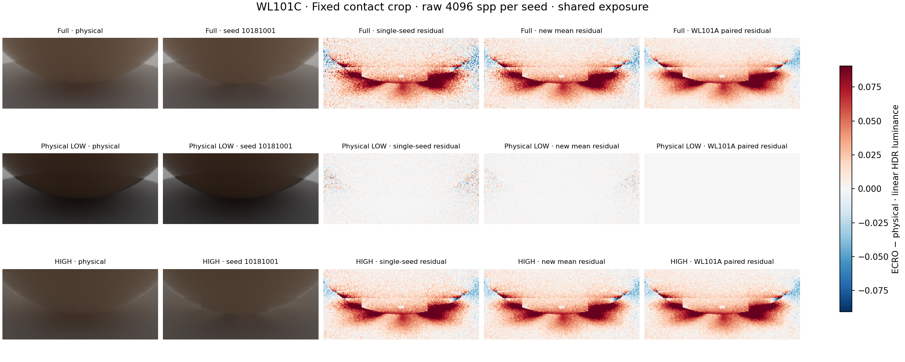
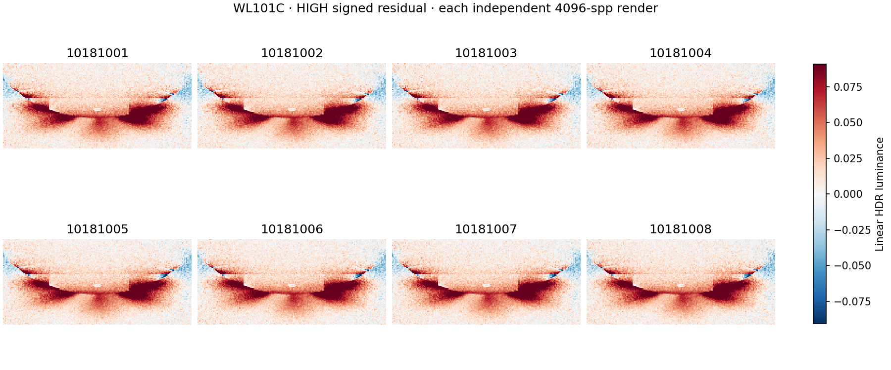
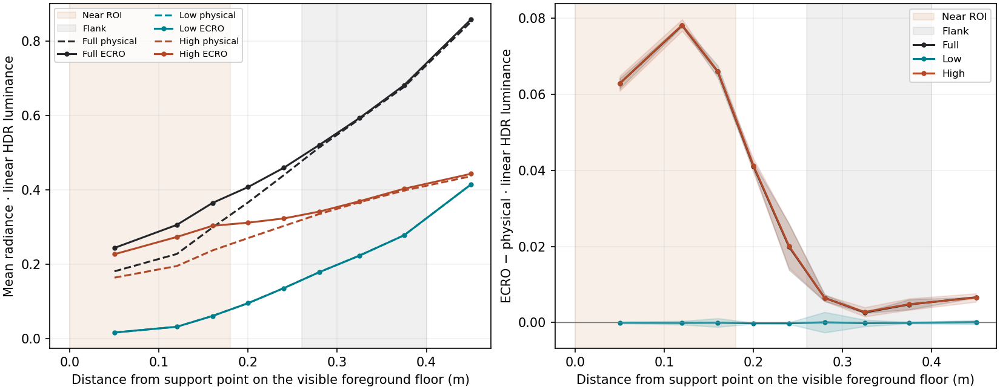

Eight independent 4,096-spp renders reproduce the bright HIGH residual next to the sphere's floor contact. The near floor is 26.49% brighter than the physical reference in mean linear luminance. The HIGH component is 32.32% brighter. The LOW difference lies within measured uncertainty.
Metrics and uncertainty · Run manifest · File hashes · Worklog



Full-image reference, raw render, and signed residual comparisons